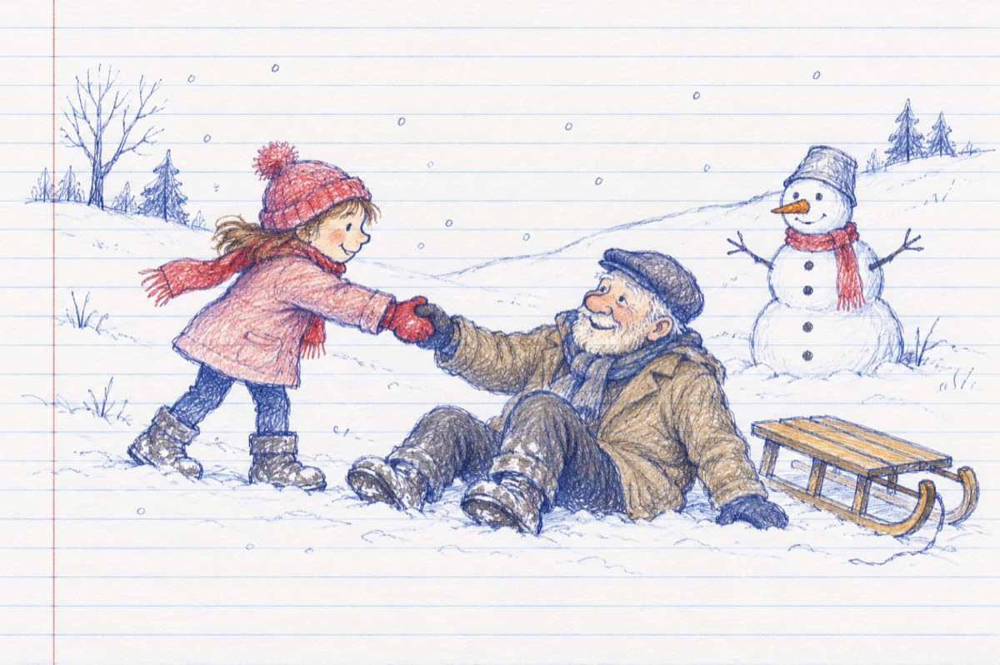

Bunicule
Bunicule, stai cuminte
Lasă fulgișorii-n pace
De la mine ia aminte
Lasă iarna să se joace!
Să-și facă nămeții mari
Și copacii să-i îmbrace
Îngrijind de gospodari
Să aibă belșug în case
Grâul să se-nzdrăvenească
Chiar de viscolul sporește
Lasă zăpada să crească
Vine-un timp când folosește
Și-o să pun acum de pază
Să vegheze-n plină iarnă
Omul nostru de zăpadă
Chemând norii ca să cearnă.
Hai acum pe derdeluș
Când geru-i sprinten, voios,
Să zburăm pe-alunecuș
Hai, ridică-te de jos!..
Eu sunt nepoțica ta
Și pot ca să-ți dau un sfat
Bunicule, știi ceva
Lupul, iarna n-a muncat!..
Vasile Groza